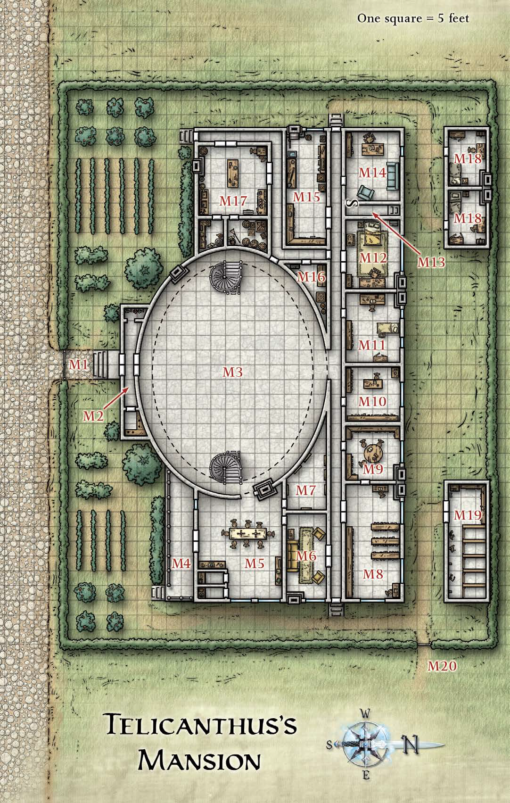
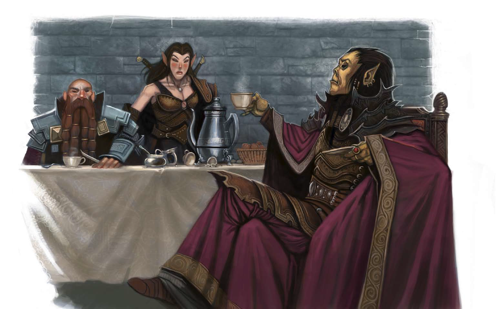
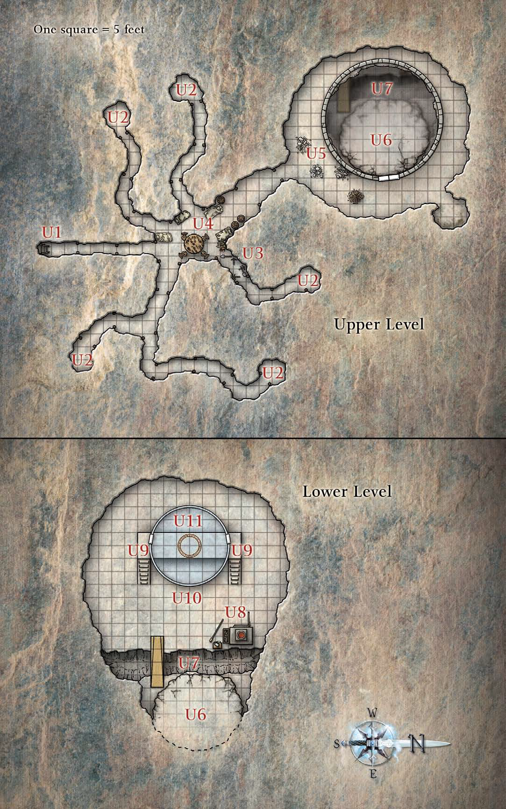
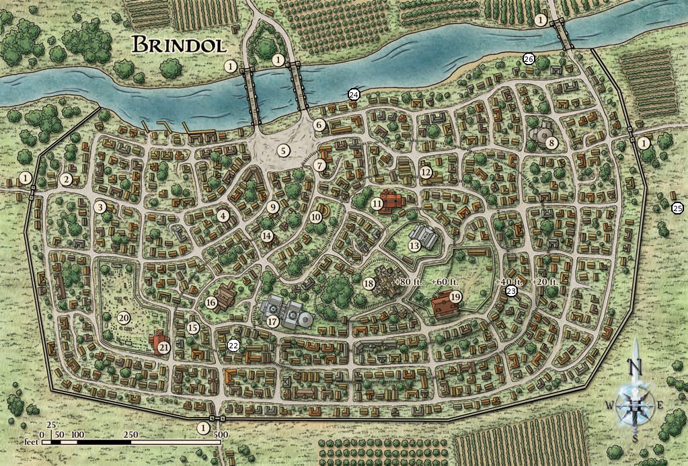
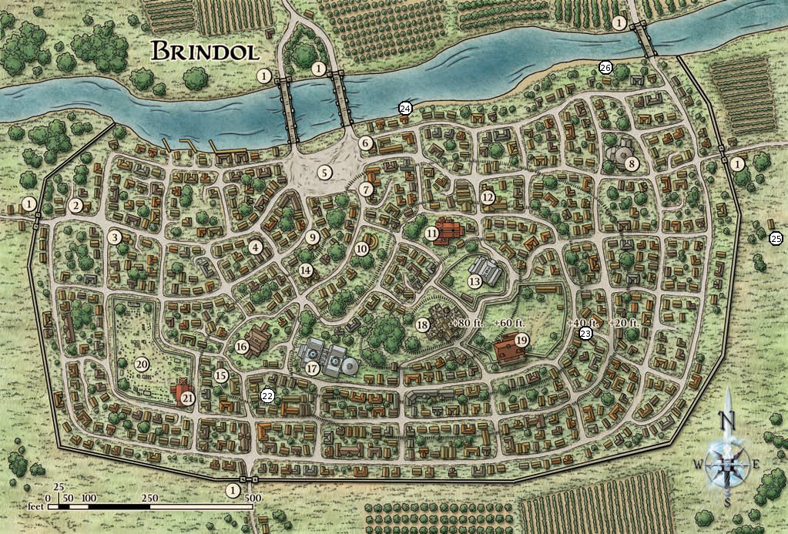
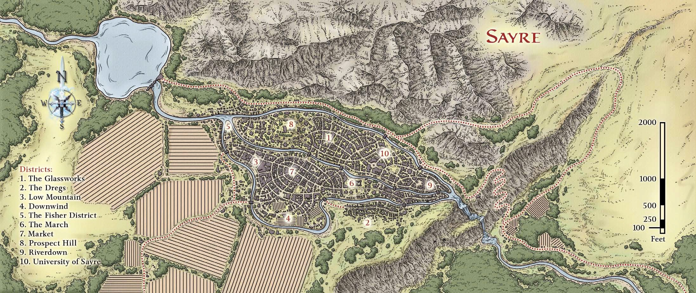
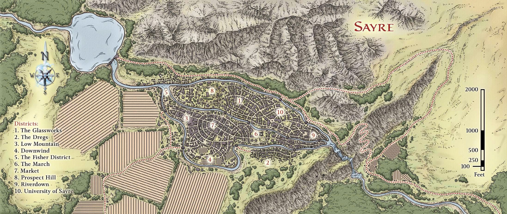

Haven of the Bitterglass
Back in Overlook, our heroes had several weeks to relax and aid in
the reconstruction of Overlook. One day after this respite our heroes
were interrupted by an exhausted, panting soldier from Overlook's city
militia. The soldier, a human named Coggin, had been sprinting through
the city along with nearly twenty other Overlook soldiers trying to find
them. Between gasps for breath, the overwhelmed (and slightly star-struck)
guard told them why he has been sent:
"My name's Coggin, sirs. I was sent to find you. The guard
captain asked that you report immediately to the West
Gate. One of our scouts to the south reported that there's
some sort of a flying warship headed for the city. It's armed,
and it isn't built by any race they recognized. After how
you've helped the city so much, the captain would like you
on hand in case there's trouble. Sirs."
Our heroes rushed through the streets to the West Gate, lead by Coggin and
joined by a growing escort of soldiers as they ran. They were waved quickly
through several checkpoints before reaching the walls. Before they gained a
vantage point beyond the city they heard a loud scraping and creaking noise,
like the sound of heavy wooden timbers being dragged roughly across the ground.

When our heroes reached a point that overlooked the west
and southwest of the city, they saw that a flying galleon
named the Conqueror and belonging to the githyanki had ignominiously crashed
into the war-torn turf beyond the city. The mast had
an improvised white flag hanging limply from it. The
galleon had skidded to a halt on the ground, and the
ship looked to have already been in a war. Patches of the
vessel had been charred by intense red dragon fire, with other
sections badly damaged as if struck by large weapons.
Two lone humanoid figures were visible on board, waiting
by the rail. Citizens outside the city were fleeing from
the wreck as quickly as possible, and our heroes
could hear their screams easily from the wall. Every guard
nearby had a crossbow trained on the passengers.
The (clearly rattled) local guard captain - a
female human named Captain Jerra Dauralis - asked
our heroes to accompany her down to speak with the ship.
It took only a few minutes to descend the steps and
exit the city's gate.
The warship leaned to one side, and it had clearly been in a
fight. Its sails were ragged, and the stern of the ship was charred
from intense fire. A humanoid with greenish skin and gray
robes stood by the rail Tokk'it, hands held open,
waiting for our heroes to approach.
Closer to the ship, the other passenger is visibly exhausted and anxious,
but just as clearly recognizable as Melvin. Breaking into a broad grin he saluted
his old companions:


"Greetings friends! I'm glad to see you. It's been a while since we've talked so I
though I would drop in and say hello. This githzerai is my friend and traveling companion Tokk'it.
In all seriousness though, I've come to beg your help.
I know I disappeared on you back in
Fortress Graystone, and for that I appologize. I was summoned to the aid of my missing master Marduk Goldbludgeon
via the psychic network linked to that ancient githzerai stronghold. He attempted to use it
to pull me through the Elemental Chaos to him at a similar githzerai fortress called Akma'ad where he and
other members of our monastic order were under attack by their mortal enemy: the githyanki. However, a
covert attack by the githyanki during my transit severed my connection to my master and left me stranded
in the Elemental Chaos.
There I met Tokk'it and after a long journey to together we returned to what passes for civilization on that
plane. We alerted the other githzerai in their city of Zerthadlun to the attacks and the damage to their
psychic network. With their help we managed to repair it long enough to send some reinforcements to Akma'ad,
including the two of us.
Our reinforcements were insufficient however, as during our long travels githyanki reinforcements arrived to
swell the ranks of the sieging army. I gather you've seen them here as well. The tide was quickly turning against
my brethren so in a desperate gambit a squad of us snuck through the siege lines, slew this ship's captain and commandeered the
vessel from the enemy to escape and seek aid from you here. We managed to disable another ship before we got away.
We were chased and attacked by githyanki lancers riding red dragons but we were able to outpace them.
Akma'ad is some 140 miles southwest of here, about a day's journey in this tub if we can fly her properly.
I don't know the exact numbers of the enemy, but I saw three war galleons like this one here and at least three
lancers, so I'd guess two or three hundred. There were nearly 100 trained monks at Akma'ad and several dozen non-combatants.
We need to return with help before the githyanki breach our fortress and exterminate my brethren.
Please, time is short and we must hurry."
Captain Dauralis, silent up to this point, suggested that the Council would not approve depleting the troops from
Overlook in the wake of General Zithiruun's invasion. Instead our heroes used their contacts to recruit a small force
of mercenaries to aid them while the city made the ship flight worthy again. In less than an hour our heroes were aboard
with small rescue force as the newly christened "Holy Cow" took to the air.

Tokk'it led our heroes to the bridge - a relatively bare room, boasting a runic
circle on the floor and a ship's wheel standing before
it. Windows around the room allowed the captain to
see forward and arrowslits allowed spellcasters to target
attackers to port or starboard outside the ship.
The dead githyanki captain's body lay in a heap on
the side of the room. The rear of the bridge featured a
heavy tapestry giving glory to a tall githyanki knight
standing triumphantly before a throne.
Tokk'it stood in the ritual circle, taking the wheel and concentrating. As he did so disembodied moans
and screams started to echo about the ship as the psychic echoes of possessed githyanki sailors manifested as translucent shimmers
to man the rigging. Tokk'it explained that this was normal - if a typically despicable piece of githyanki magic. When some of our
heroes began to confuse githyanki with githzerai Tokk'it was quick to elucidate them on the distinctions - at length.
"The githzerai and the githyanki were once one people in the ancient past, enslaved by the mind flayers. After countless
generations of brutal oppression, our people developed some of the psionic powers of their masters until one day the hero Gith
arose to lead us to freedom and break the illithid empire.
However, once her people were free she went too far. She launched a crusade to exterminate every last one of the
mind flayers, turning the former slaves into a conquering army rather than a free people. Thus the githyanki - 'the children of Gith'
were born.
A great mind, Zerthimon, spoke out against Gith replacing one tyranny with another, demanding she step down. She refused and a civil war
followed that nearly destroyed us all. Ultimately Zerthimon defeated Gith in single combat, and in his wisdom showed her the way of peace
and spared her life. He exiled her and her followers to the Astral Sea where they became little better than bloodthirsty pirates.
Zerthimon claimed the Elemental Chaos for his people - my people - the githzerai: 'those who spurn Gith.'
To confuse githzerai with githyanki is an insult. Do not make the mistake again."
Tokk'it went on to admit that he doesn't fit in well with other githzerai. He had been rebuked by his elders for a lack of emotional control
and disordered thinking. He found some acceptance with the female Gallia while they were romantically involved, but she broke up with him
several months ago, and he hoped that proving himself a hero with this rescue mission might lead to a reconciliation.
Elsewhere onboard, Melvin explained how important this mission was:
"This githyanki attack could not have come at a worse time.
Most of the githzerai at Akma'ad right now are visitors. The
abbot is hosting a meeting of extremely important religious
and political leaders. Kath'ik from the Monastery of Nine
Stones, Most Exalted Odos from the House of Reprisal,
Wellik the Elder from the Tower of Dancing Flame ... all
leaders that the githzerai look up to. I think they are deciding
who will lead them in the upcoming war, and how involved they
will be in aiding our world."
Kitara headed belowdecks to search the ship. Picking the lock to the captain's cabin, she found documents identifying the vessel as the
Conqueror and the deceased captain as one Captain Dav'ot. The ship's manifest listed a full contingent of 140 troops, one dragon and one
lancer, and a gish assassin named Brann'ot. There were orders signed by a Captain Iquel ordering the Conqueror to accompany the Sacrifice
and the Tyranny from Tu'narath to attack the githzerai stronghold of Akma'ad:
"Dav'ot,
We expect the attack to go smoothly and quickly.
Our informer is inside Akma'ad already, and has
agreed to assist Brann'ot in the assassination of the
foul githzerai leaders. Once you receive the signal
from my flagship that the defenses are neutralized,
land the Conqueror at a safe distance from the
fortress and disembark all of your troops along with
the Tyranny.
By the grace of High Emperor Zetch'r'r, Lord of the
Astral Sea,
Captain Iquel
The Sacrifice"
In the first officer's cabin Kitara found three small, hand-drawn portaits of githzerai
Odos, Kath'ik, and Wellik - the githzerai leaders then meeting in Akma'ad.
Less than an hour after our heroes departed Overlook
on the damaged galleon, it sailed through wispy clouds.
Suddenly, Lechonero spotted movement ahead from his perch in
the crow's nest. Two red shapes flew out of a
cloud, changing direction and speeding up as they moved in
our heroes' direction. Lechonero saw two red dragons, each with a rider
strapped on its back, and called the crew to arms, manning the ballistae
on deck.

The highly maneuverable dragons strafed the Holy Cow with their firey breath, allowing the lancers
to make charging swipes at the defenders on deck and be away before they could fight back, but
Lechonero's keen aim whittled the dragons down and kept them from lining up ideal strikes against
the ship. Combined with an assault by the mercenaries manning the ballistae and coordinated by Barases,
the dragons were slain, forcing the lancers to glide unnaturally through the air to land on the deck
and engage our heroes in melee.
Just as our heroes dispatched the githyanki Lechonero called out from the crow's nest again.
The red dragon closing on the ship was larger than the two
they just fought. There was one scarred githyanki riding it. This veteran dragonknight proved more
strategic then his compatriots - attacking Lechonero directly to disable our heroes' best ranged
attacks and staying out of the firing arcs of the ballistae. Still, Lechonero proved the more resilient,
forcing the dragonknight to the deck where the rest of our heroes dealt with him handily.

 Our heroes passed over fields and woods that gradually
give way to a reddish rocky waste as they approached
the githzerai fortress. They saw signs of the battle before
they saw Akma'ad itself; fire and smoke rose from the site
in a dark pillar. The Holy Cow crested a final mountain range and saw Akma'ad below.
The fortress was utilitarian and stark, with
red walls rising up over a dusty valley. An overhanging
mountain cave amde it extremely defensible.
Our heroes passed over fields and woods that gradually
give way to a reddish rocky waste as they approached
the githzerai fortress. They saw signs of the battle before
they saw Akma'ad itself; fire and smoke rose from the site
in a dark pillar. The Holy Cow crested a final mountain range and saw Akma'ad below.
The fortress was utilitarian and stark, with
red walls rising up over a dusty valley. An overhanging
mountain cave amde it extremely defensible.
Akma'ad was surrounded by githyanki troops and a vessel
identical to their own approaching them, troops moving on its deck. From the lettering on the gunwale, Lechonero
identified it as the Sacrifice. Melvin rushed to the pilot's cabin and took the helm from Tokk'it. The two ships
jockeyed for position, the ballista shots from each going wide. Barases organized a boarding party among the
mercenaries - readying grappling hooks to bind the ships on their next pass. Once again they failed to ram
one another upon their bow spikes, but Barases' grappling team caught the gunwales of the Sacrifice from a higher
angle. The mercenaries brought the ships side by side, the Holy Cow hull resting on the edge of the Sacrifice's deck
and Barases, Kallista, Kitara, and Karrion jumped dow to board the enemy ship.
Helpless against the grapples and as the boarding party cut through her troops, Captain Iquel made good on her ship's
namesake and steered her into the Holy Cow's hull, scraping it's keel across her own deck, destroying her sails and
scattering the melee to deadly effect. Bereft of it's rigging, the Sacrifice lost its flight magic and hung as a dead
weight from the grapple lines - causing the tied ships to begin a death spiral toward Akma'ad below.
Lechonero attempted to join the melee by leaping from the Holy Cow's crow nest to the rigging, only to have it
collapse under him and tumble gracelessly 40 feet to the deck of the Sacrifice below.
When Captain Iquel emerged from the helm and laid about her with magic Kitara answered in kind - the two wizard swordswomen
swashbuckling across the heavily listing deck as bits of rigging from both ships fell about them. In the end Kitara brought
Iquel to her knees and battered her across the deck and with a final magically-enhanced kick booted her off the gunwale to plummet
to the ground far below.
Unable to prevent their eventual crash, Barases evacuated everyone back to the Holy Cow and strategically cut the grapple lines
to drop the Sacrifice onto a force of githyanki on the ground.
On the way down, it was clear that two squat guard towers perched
on top of the steep cliff containing Akma'ad. Chains were stretched between them,
holding back what must have been hundreds of tons of rock and
rubble. Several githyanki were guarding the towers.
Melvin managed to steer the Holy Cow into a rough landing against the
towers. Quickly disembarking our heroes overwhelmed the githyanki squad guarding the clifftop and released
Akma'ad's landslide defense on the army below.
With a tremendous, deafening roar, a cascade of rock - from
pebbles the size of a pea to boulders the size of a mule -
tumbled down onto the githyanki army massed outside the
walls of Akma'ad. At first, all our heroes saw was a blinding cloud of
dust, but as the wind cleared it from the field, they saw that
hundreds of githyanki troops had been pulverized by the
rock, and the rest were scattered or fleeing outright.
Karrion teleported the party into the midst of the remaining githyanki hugging the walls
of the fortress while Lechonero sniped dangling from the chains that formerly restrained the landslide.
Taken by surprise, our heroes wiped out the stragglers and were taken into Akma'ad by its defenders who
had been holding a breach in the wall.
The githzerai had suffered serious loses since Melvin's last count. Only about 50 fighting githzerai
still survived, including Tokkit's Gallia.

The surviving githzerai, many of them wounded, gathered
around an old blind githzerai who seemed as aware of his
surroundings as if he could still see. The monk spoke in a
rough tone.
"We're alive. I don't know how they knew we
were here, but the cost was high. Too high. Both Kath'ik
and Wellik are dead, along with dozens of our brothers and
sisters. We lost the abbot and most of the monastery. Our
conference is finished. Now I must decide our path."
With an almost undetectable grimace, the stoic
githzerai turned his empty eye sockets toward the lines
of dead and wounded.
"Gather your belongings. In the
morning we travel to Sayre. There is a conference there
I am obligated to attend before we depart for home."
He paused and turned his sightless gaze in our heroes' direction.
"You aren't githzerai, but you fought for us. Who are you?"
Tokk'it introduced our heroes and explained their
role in the battle. Most of the githzerai hailed them as heroes,
and Odos (the blind githerzai) grudgingly thanked them,
but he was exhausted and grieving for his slain friends and
came across as dour, pessimistic, and suspicious.
In speaking with Odos, our heroes discover
that he was concerned greatly about
his people and their future. He worried that Sayre was only a
temporary solution, and doesn't know if there's anyone he
or the githzerai can trust other than themselves. Odos was a
good and just leader, and his taciturn nature was a reflection
of the hardships his race has endured, exacerbated by the
recent attacks.
He reveals that the githyanki attacked without
warning, and they sent strike teams to the personal
chambers of all the githzerai leaders, as if they knew exactly
who to attack and where they were staying. He was convinced
someone fed them information on the layout of Akma'ad,
as well as the names of the leaders present. Odos himself was spared
only because he stepped outside for a walk and heard the
team of assassins in his room on his way back. He surprised
the squad of three and defeated them single-handedly.
One of the githyanki assassins
in his room had a small device that could be held in her
hand. She was speaking into this object when he surprised
the assassins in his room. It was green and looked reflective.
Festivus inspected the shard of green glass, identifying it as
some type of magically one-way communication device, allowing the
carrier to transmit a message through some unknown ritual.
Apparently attacks of this sort had been
happening to githzerai enclaves and monasteries all over
the mortal realm. Most had fled to a refuge in Sayre, a
nearby city. Odos wanted to take his people there after the battle.
Odos and the other githzerai had planned this
meeting at Akma'ad to discuss whether or not to accept an
invitation in Sayre to meet with a newly formed coalition
of leaders from other regions of the world concerned with
the extent of the githyanki invasion. Each comes from a
homeland ravaged by the githyanki, and they're all looking
for aid and support from their regions. Odos was bitter that
the "humans" (he has a tendency to call all non-githzerai
and non-githyanki "humans") sound divided over political
issues when there's so much at stake. He was against going
to the meeting, but after the battle felt that going to Sayre was the only
choice for his people.
Tokk'it sought out Gallia to introduce her to our heroes. In the process of
seeking her out, Tokk'it spoke with other githzerai,
many of whom remark how they believed she was
dead because she was trapped on the upper roof and surrounded.
When Tokk'it found her, he is overjoyed she is alive, but she
acted coldly toward him and shrugged off
any questions about the battle.
When Tokk'it introduced Gallia to Karrion, she was polite but formal and quickly
excused herself. Tokk'it was upset and Karrion attempted to console him with
platitudes before awkwardly excusing herself as well.
Sayre was over twenty miles away across rough terrain,
and the githzerai had wounded who had to be
pulled along in small carts. Due to the slow pace, it
took two days for the githzerai to reach Sayre with
their patients. Under the ministrations of Festivus and Barases and
any githzerai healers, the injured troops began to heal.
One the first night of the journey, the githzerai camp was quiet.
Even the wounded seemed to have found some peace in the wilderness.
Suddenly the peace was shattered as a commotion at the edge of the camp turned into an a series of
hit-and-run attacks. Kitara and Barases chased the assailants into the woods.
Once they were out of sight a githyanki emerged straight out of the
ground at Lechonero and Festivus' feet, a silvery longsword poised to strike.
After a lengthy pursuit Barases and Kitara abandoned the chase and turned to
return to camp only to be ambushed by their prey - aided by a masked female
githzerai. They defeated the ambush, but the masked githzerai disappeared into
the woods.
Lechonero and Festivus were pinned down by the gish assassin Brann'ot - a vicious melee
fighter who put the two ranged combatants at a severe disadvantage. Ultimately they
managed to spread out and encircle him, between their arrows and spells limiting his
movement until they could whittle him down.

Licking their wounds the band continued on to the city of Sayre. After several days travel
they descended from the mountains and found themselves on the fertile floodplain surrounding the city.
They made a leisurely journey around the Lake of Songs - dammed at its outflow and used year-round for
fishing and recreation; its beauty a work of art. They followed the Singing River as it descended from
the lake past bucolic farmlands and for the first time in weeks began to feel themselves relax.
During the journey Festivus regailed her companions with tales of her years studying
the Arts at the famed University of Sayre. She had run away from her home in Sherrbyr,
fleeing the repressive society of her youth. Seeking a more accepting culture
she came to this flamboyant metropolis which valued beauty and knowledge over religion.
They heard the distant sound of church bells long before they
actually saw Sayre. It lay in the valley below them, nestled
between three rivers. Sunlight reflected from the city's canals.
Although it had roughly the same number of inhabitants as
Overlook, Sayre was a very different city. It was said to be a city
of artists, artisans, and scholars, and one can see why. The
sunlight filtering through the hills gave a golden glow to the
entire valley. From where they stood, they could see mansions and
palaces rising up from islands between the rivers, university
halls jutting upward, numerous monuments and large statues,
and the smoke from smithies rising into the air. Mist from a
huge waterfall swirled along the southern edge of the city.

A guardhouse stood in front of the great bridge that
lead over the river into the city. A throng of people bustled
about - buskers, salesfolk, travelers, beggars, and guards.
Even a few rich nobles could be seen, riding in open-top
carriages in their finery.

A servant approached our heroes, haltingly.
"Excuse me, but by any chance are you the Heroes of Elsir Vale?"
When they confirmed their not-so-humble identities the man continued:
"My master will be so pleased! You're quite famous; he was
just talking about you today at tea. Would you do me the
honor of allowing me to introduce you?"
Given permission, he looked even
happier and lead them through the throng to a darkdoored
wooden carriage with remarkable stained
glass windows. The carriage was pulled by two horses.
The servant knocked once and opened the door.
"My Lord Telicanthus, may I please introduce the famous Heroes of Elsir Vale."
A tall, spindly man stepped out into the sunlight. Lord
Telicanthus was a githyanki.

Fresh from their near-deadly encounter with Brann'ot, Lechonero had a near-violent
reaction to the newcomer, warning "Githyanki!"
"Of course I am! I'm not associated at all with those
murderous fellows in the Astral Sea, though. No, I left
that life years ago and I've never regretted it once. I'm a
glassmaker now, and a loyal citizen of this fine city. We
can't help how we're born, but we can choose how we live
our lives. Something that everyone really ought to learn."
He was quite unlike any githyanki that our heroes had
seen before, however. Lord Telicanthus had a warm,
quick smile and eyes that make it clear he was very
interested in whomever was speaking. He wore very
fashionable, expensive clothing and had no githyanki
jewelry or weaponry whatsoever. His handshake was
firm, his voice clear, and he had only the faintest
trace of an accent when he addresses the group:
"It's such a pleasure to meet you. We've received some news
of our friends to the north, but I never expected to meet the
heroes in person! Some travelers have brought word of your
many battles. It's very rare to meet living heroes, so this is
quite a moment for me. Are you just arriving here in Sayre?"
"Well, allow me to provide you with some most humble
shelter! The finest inn in the city is the River Jewel, right by
the bridge in our Glassworks District. Pennel?"
he turned to his secretary, just exiting the carriage.
"Run ahead to the Jewel and book... [counting the group] Rooms for
each of them. Put it on my account there, meals included.
Let them know that their guests are people of honor, and
are to be treated as such. It's so rare to get people of the world here, artists aside...
Would you do me the honor of coming to tea
tomorrow? All the elite in the city, from the mayor on down,
would doubtlessly be honored to meet you. You'll be the toast
of the town. Tomorrow, at my estate - I'll have Pennel leave
details for you in the morning, and I'll send a carriage."
After Telicanthus' carriage departed, our heroes found that the guards
had refused to let their Githzerai companions
cross the bridge into the city. Over objections like
their kind isn't welcome here
and
all they do is steal and cause trouble
our heroes managed to negotiate their entry, staking their
reputation on keeping an eye on the immigrants.
Passing through the gates, our heroes escorted the Githzerai
through the broad, paved streets of the
University. They walked next to academic buildings
and past marble statues of long-dead deans, topping
the hill and heading down toward the central fork of
the river. Following the east fork of the Singing River southward
brought them into Riverdown. The quality of
the buildings began to degrade quickly once they
were away from the university, and an oily mildew
covered the stone walls. Constant mist from the nearby
waterfall filled the air there. The streets
boasted less wealthy individuals running errands, packs
of unsupervised children, stray dogs, and people of
questionable repute.
They arrived at the Plaza
of Vision, an open area in Riverdown only accessible
by winding through back alleys that branch off of
tertiary streets. It was an isolated and dark plaza surrounded
by abandoned and rotting warehouses. A
corroding statue of a skyward-staring wizard stood
in an empty fountain in the middle of the square, flanked by a couple loitering beggars.
Odos lead the group directly to
a red building alongside the plaza - Kark'din, the Low Sanctuary.
Odos was appalled that the githzerai weren't living
somewhere better. Riverdown was extremely poor, particularly
when compared to the university district they
walked through earlier, and Odos felt that this area
was beneath the dignity of the githzerai. He was fuming
by the time they arrived, particularly when he sees that
the building used by the githzerai was an old warehouse
painted with flaking, peeling red paint. A githzerai at
the door readily admits them to the sound of raised voices coming from deeper
inside the building. The words were unintelligible at first, but it
sounded like githzerai voices raised in anger.
There were thirty-five githzerai inside the
makeshift "Low Sanctuary," an open warehouse that
had been divided into sleeping, meeting, and eating
sections. The structure was rough and dilapidated,
but clean and organized. Its well-lit interior was a nice
counterpoint to the slums outside.

The state of the githzerai community
in Sayre could, at the time, best be described as fractious. The
githzerai had splintered into two groups who believe
they should proceed in very different ways. One of
the leaders, Aziff, urged patience and caution. She
was convinced that the locals' feelings were temporary.
She had lived in Sayre for many years, and the recent
change in public opinion about the city's githzerai
citizens had distressed her a great deal (although she
didn't reveal anything but a stoic demeanor openly).
Aziff had the backing of the other local githzerai.
The other leader, an atypically fiery githzerai
named Gal'ott, was urging action. Young and angry,
he wanted to take the fight to the streets, organizing
what amounted to a githzerai gang. Gal'ott and several
other githzerai are refugees from cities and monasteries
from elsewhere in the world. Many had traveled
several hundred miles to get to Sayre after seeing
githyanki destroy their homes, and they were appalled
that nothing was being done there to combat the threat.
These githzerai wore red armbands and never travelled
alone, only adding to the local residents fears of
exactly what Galott was asking his fellows to do.
The githzerai fell silent upon the entry of our heroes,
eying them suspiciously until Odos spoke on their behalf.
The locals related that though they were not sure why,
as they had done nothing to provoke the response,
the people of the city had turned against them.
Guards harassed them and limited their movements,
beggars attacked them and spied on them, and any robbery
or attack that occurred in the city was being blamed
on the githzerai. Even more worrisome, four githzerai
out on their own at night had been brutally slain by
someone using knives. The other githzerai had been
unable to locate the killer, and the city guard seemed
disinterested in helping, claiming that other githzerai
are committing the crimes as they turn on one
another like a pack of rabid dogs.
The racism and
hatred was growing. They blamed the githyanki Telicanthus
for this, although they had no solid proof and he
publicly urged moderation against the githzerai.

At that a cloaked and hooded figure emerged from a back room.
With a dramatic sweep of the cowl she revealed herself to be
Amyria. Upon seeing our heroes, Amyria was overjoyed. The deva was tired
and worried, and seemed to be carrying a great burden
on her shoulders.
She had spent a great deal of time in the weeks
since she parted with the adventurers traveling
outside Elsir Vale, seeking out the extent of
the githyanki invasion. In the process, she had
established connections in most of the cities
nearby. She had also learned that githyanki attacks
have come at the worst times for the defenses of
every region. Only Elsir Vale has been spared - at
least thus far - thanks to our heroes actions in
defeating General Zithiruun. She knew it was only
a matter of time until the githyanki try again.
Amyria had an agent in the household of Lord
Torrance of Sayre and was suspicious of his connection (as
well as that of other prominent citizens) to Lord
Telicanthus. The githyanki, whom she went out of
her way to meet at a social event the week before,
seems genuine, but a githyanki operating so openly
just seemed wrong to Amyria. She wanted to believe that not all
githyanki are evil ravagers intent on conquest, but
she was suspicious nonetheless.
Amyria learned that two leaders in other nearby
cities were seeking out allies. She felt that forming
a more concrete alliance between all the besieged communities,
city-states, and regions would help them all, so she
had been spending a great deal of time fostering
this idea. She had been marginally successful in
putting together the war council, which was to hold its first
meeting in Sayre in the morning. But Amyria herself
had little more than a voice in the proceedings. She
had no home community and represented only herself
and her god, Bahamut. She was being allowed in the
proceedings because she organized the event and
chose Sayre as the site of the meeting.
Amyria chose for the council to meet in Sayre
because, like Odos, who grunted and noded when
she mentioned this, she suspected that the githyanki
have some means of communication that surpasses
any sort of magic that she was aware of. They seemed
able to react almost instantaneously to threats
that marshal to meet them, and they strike when
their enemies are at their most vulnerable. Only
regions such as Elsir Vale (on a state of perpetual
heightened alert), are having luck defending against
the attacks. She also told our heroes that she tried to
get to the island nation of Nefelus, off the distant
coast, but there's some sort of blockade preventing
any ships from sailing there. The knowledge of
magic possessed by the sages of Nefelus was said to be
nearly unsurpassed, but the University of Sayre is a
worthy rival. She hoped to convince the war council
that they should ask the scholars of the university to
turn all their efforts toward uncovering the nature
of the githyanki's communication network.
Finally, Amyria had one other reason for coming
to Sayre. She had a dream recently that had the
weight of significance behind it. She wouldn't use
words like "prophetic," but when she recounted
the dream, her eyes grew distant and her voice
soft as she related what she saw:
In my dream I was standing in the midst of raw elements.
Waves crashed around me and fires flared, and I was
looking down through clouds onto a dark blue night's sky.
Stretching across the sky was a giant spider's web that was
woven between planes. It was silver and sparkled with stars,
and at the end of each web line was a githyanki. As each
githyanki spoke, the web sparkled, and a fat spider in the
middle listened to everything that anyone said. The spider
was beautiful, but you could tell it was evil, just like the
people talking through it. It scuttled around, fixing frayed
lines and tossing out new lines to new people. Most were
githyanki, but some were not. One of the lines went to a
githzerai.
I looked harder at the spider, and I knew it was here in
Sayre. I could see the city around it. So I came here. I think
someone in Sayre is helping the githyanki, but we don't know
for sure who it is, although we have our suspicions. And we
don't have an easy answer about what to do about it.
Gal'ott responded:
Of course we do. We find your spider. We find him and kill
him. We kill him and return to our homes.
Amyria replied:
You think that's going to solve the problem, Gal'ott? We
know of whom you speak. And he's politically connected
to everyone who could help the githzerai! Kill him and get
executed as murderers and traitors. I say we need to prove
what he's up to, and then discredit him. It's the only way to
help the githzerai.
After some convincing, Gal'ott bowed his head and said:
I will comply with the majority. For one week. After that
time, my people will take matters into their own hands.
The group begins to discuss strategy, Odos sitting in judgement.
Amyria was vehemently opposed to assassinating
Telicanthus. Not only did she think it would be a death
sentence for the martyrs who attempted it, she feared
that the political backlash from all of his friends would
put every githzerai in the city at risk. Worse, assuming
it was he behind a possible githyanki communication
web, she wasn't sure that killing him would stop it; he
might be completely innocent. She was in favor of more
investigation, and revealing Telicanthus as a fraud and
traitor before dealing with him publicly. That way the
githzerai couldn't possibly be blamed. She pointed
out that Sayre hadn't been attacked by githyanki yet,
and that may have been because Telicanthus was alive.
She wanted the githzerai to join an alliance against the githyanki.
Gal'ott iwas tired of being mistreated
by the other races, whom he considered inferior to the
githzerai. The very fact that they would allow a githyanki
in their midst made them suspect. He was mistrustful, and
thought that he should lead a small group of githzerai into
Telicanthus's mansion to kill him.
Aziff had grown quite
close to Amyria in the short time she had known her.
She had lived in Sayre for a while and remembered a time
when githzerai were not treated so poorly. While she didn't have much of a voice in the proceedings, she
represented a large enough faction of local githzerai that
Gal'ott had been forced to recognize her.
Chend was an elderly githzerai who favored
leaving the humans and the githyanki to their war.
He thought they should leave the plane until the war
was decided, then deal with the survivors. Odos knew
Chend from long ago and valued the elder's views.
After much debate our heroes succeeded in convincing Odos. He quieted the
fractious githzerai and united them behind his will.
He agreed to accompany our heroes to meet Amyria's
alliance. Odos decided that Telicanthus should
be investigated before taking more extreme measures.
In the interim, Odos wanted to know how Telicanthus
was connected to this web that Amyria foresaw.
He led Festivus in the casting of the ritual
Consult Mystic Sages to divine the information.
The outcome was a brief verse:
Read the writing on the wall
You are not far from a place where knowledge turns to greed
Beneath the spice house lurks the profane
And knowledge lies trapped behind the guardian

On their way to a abandoned spice warehouse near Lowbridge to follow up on the clue,
our heroes were ambushed by a group of beggars who turned out
to be exceptionally well armed and armored under their rags.
Using some evil divine artifacts, the well-trained gang proved a difficult challenge
but were ultimately dispatched.
Our heroes continued on to the warehouse in Lowbridge. It was abandoned a decade ago
but still smelled faintly of exotic spices. The faded and
chipped paint over the boarded main doors specified the "Ridolfi and Sons, Spice Merchants."
Picking the lock and disabling the traps on the entrance, our heroes found the interior small,
rotting, and empty.

A quick search uncovered a hidden trapdoor inscribed with the words Give, and you
will be given to
in Common. The trapdoor lead to a descending shaft punched through the roof of an
ancient, buried building. This stone-walled building used to have interior floors as well, but they had
rotted away. A tricky battle ensured with the guards (and the gelantinous cube filling the base of the shaft)
as our heroes climbed down the rotting rafters.
The shaft terminated in a former window leading to a tunnel formed by a buried city street. It's ends
and the spaces between buildings had been clogged with mud and silt. This section of the street
was excavated several generations ago, and has since
served as a sleeping place and shelter to generations
of beggars. Stopped up by silt and soil on either end,
this 50-foot-long section of roadway was lined with
ancient cobblestones and filled with sleeping pallets
and the meager possessions of dozens of people.
Across the street was the excavated
entrance to what was once a grand temple of Ioun.
The icon of Ioun above the doorway had been ripped
off.

Opening the temple doors, the vestibule on the other side
had an amateurish painting of a beautiful woman standing
on a mountain of wealth, holding out her arms
invitingly. Barases identified it as a painting of a human aspect of Tiamat, goddess of
greed and envy.

The sound of religious worship droned through the closed inner doors, covered with the painted image of a five-headed
dragon on it, crouched over a mound of treasure. The
mound was worn down by the passage of many greedy
hands.

Bursting in on the cult, our heroes could tell the temple was
once sacred to Ioun, but those days were long past. The pews
were filled with beggars, all with their backs to their attackers, and a
filthy and bedraggled priest across the room stood before
an altar.
Our heroes made short work of the assembly, but after a putting down the
priest, he miraculously sat back up alive. Our heroes captured and questioned him.
He named himself the Filth King and offered information in exchange for his life.
He admitted a few
weeks prior, he was approached by a
stranger in a cloak. While he didn't see the man's
face, the stranger offered to pay substantially if the
beggars would harass the githzerai at every opportunity.
He even offered the services of mercenaries in
his employ - the Laughing Shadows - and a bounty on
dead githzerai. The Filth King gladly accepted.

Information given, our heroes let the Filth King flee and proceed to collect
the pile of treasure by the altar. The coins began to slide and clink, moving by themselves as
they surged upward. In seconds, a five-headed dragon made
entirely out of treasure stood before them. Its hiss was the sound
of coins rubbing together, and its heads snapped forward to attack.
After overcoming the guardian, our heroes discovered a secret passage behind the altar.
When they pried open the door, they saw a large stone room.
It looked like it was once a library, but any books had long
since rotted away. Instead, the walls were covered with
thousands of lines of carved text, filling the space.
Rising from the ground around the room was a group of
pale, emaciated creatures. They immediately began to lurch
toward the intruders. Their fingers were missing any flesh that might
have once been there, and each fingerbone was sharpened into
a point.
After dispatching the undead librarians, our heroes search the walls for clues:
A matrix of blown glass can be formed into a mathematically
perfect sounding chamber, then used to amplify
magical resonance. In theory, disconnected sheets of
a similar substance can be attuned to the master. This
would allow communication at unlimited distance. The
question is: How can one handle the planar boundary?
When I began this research in Nefelus,
I never expected
that this would be a concern
A problem has developed. I need some method for
shunting away the psychic residue cast off during communication.
This seems to be quite toxic. I believe that
I can redirect it into the Astral Sea, where it should do
no harm to anyone
The final Glass is more beautiful than I could have hoped.
My apprentices have outdone themselves. A full 30 feet in
diameter, it has anchored itself into the very nature of our
plane, and hangs in space. Our ritual went flawlessly and
it has taken on a life of its own; as thoughts travel from
one external pane to another, the Glass shimmers like the
night sky. It is quite beautiful. It seems to be invulnerable
from the outside, as I intended, but the same protections
have not transferred into the interior. This worries me.
The interior of the Glass becomes a psychic maelstrom
if the information flow is not redirected. I have succeeded
in rerouting the rogue energies to the Astral Sea.
So long as no one is bothered by them, I see no risk; and
in such a plane, what are the chances that they will be
discovered? So small as to be infinitesimal...
I am making only a few select panes linked to the glass,
but it would be just as simple to make many. I expect
that selling these to far-flung allies could make me a rich
man indeed. I will need to consider it.
from the diaries of Auglos of Nefelus
Eventually our heroes discovered a note seemingly written
directly to them authored centuries ago:
You're watching me. I can see you, but you don't know
that. You're listening to my words even though I'm long
dead. No, not you! Idiot. You're just writing down my
words because you were told to by the old man with a
beard and a magic glass. I'm talking to the other people,
the ones reading this on the wall. They know I'm dead.
Oh yes, dead, mud in my mouth, river arisen! I sing of a
ship that sails the air, that brings swords and fire. You've
fought it, too, but it's worse for you. We're just going to
die. They'll kill us all because of what the bearded man
does, talking through the mirror. They'll just flood the
room, and that will solve their problem until he finds it
again. He's been looking for it a long time. You think he
likes you but it's a lie. There was digging, you see, and
cleaning, and many false leads. He'll use it to conquer you
all, but no one will believe you. You'll have to prove him a
liar. They can talk through it, you see. They've managed
to do it, and the armies whisper through the blue darkness
in a way that no one else can hear. You're dead if you
don't stop it. Even now they are discussing you. Distract
them,
he is told, this is too important to ruin.
But you
can. Boy! Boy, I demand a goose! Pluck it and ruin it and
save yourself if you find the right spot. Look for the old
tower when no one expects you. It isn't where they think
it is. Ask the dwarves if you like, the brothers who dream
of maps. Because in the days to come SHE will spread
herself, and none will be safe from HER reach, so you may
wish to trust the speech of the Bladed Girl. Trust, trust her
if no one else. If her people do not come together, they
will certainly be ripped apart. Like my goose? I am so very
hungry. I could use some tea. Boy!
verbatim account from the recorded visions of
Graiden Brackenhaus, oracular guest of Seer Auglos of
Auger, as scribed by Brother Pinnot from the Church
of Ioun.
Emerging from the depths, our heroes head to the Low Mountain district
and Deep Cartography in particular - a shop run by the dwarven brothers
Andor and Toris Scrollstone. The brothers are experts in underground Sayre
and relate the history of Auger - an ancient city run by the diviner Auglos,
first founded on the site of Sayre and now buried underground by some unknown
disaster. Though the plaque on Prospect Hill claims to be the location of
Auglos' tower, the brother's maps reveal it should really be located beneath
the spot where Telicanthus' mansion now stands.
Information gathered, our heroes called it a night and retreated to The River Jewel
to lick their wounds in the luxury gifted to them by Telicanthus.
The next morning, just after dawn Amyria greeted our heroes at the inn, waking a few
reluctant risers. Amyria suggested they all walk to the meeting of
the potential alliance members in the March at a building on the University of Sayre's campus.
En route, Amyria explained the situation:
I've brought you with me as material experts on githyanki tactics and motivations, as well as defensive strategies to employ against our attackers. Your defeat of General Zithiruun has brought you renown among far-flung communities, especially those already affected by the invasion. It has made you honored guests of Sayre and other prospective members of the alliance. Hopefully it means they will listen to you.
However, even with your reputation, going forward no government will take you seriously without the Coalition's backing. You'll need their support, but that will also open doors for you, and enable you to get places and see things you wouldn't have before. We need them to officially sanction you.
Without presenting a unified front, the githyanki will be able to continue picking off individual, strategically important cities as they see fit until there's no one left to properly resist them. We need to get the alliance members to transfer military units under their separate control to a central command. That way we can rally our combined might in defense against the more focused githyanki attacks.
Even with a common purpose, our efforts cannot be run exclusively by committee. The githyanki take their orders from the Lich Queen herself and can act with single-minded efficiency. We need the Coalition to elect a leader that can steer the council and veto individual members as their divisiveness begins to weaken us.
Unity under a leader is easy for those in command, but the Coalition must also become a symbol to rally the common troops and bring disparate peoples together. I suggest we find a name for the alliance, something all can follow.
Somehow the githyanki are a step ahead of us at every turn. When someone marshals a defense, they appear suddenly, perfectly placed to ambush the opposition. When resources are moved or someone goes into hiding they fall directly into enemy hands. Somehow the githyanki know our moves before we make them and can move immediately to take advantage. We need the support of the alliance to investigate their intelligence network or we will lose this war before we start to fight back. Though I would preach tolerance, his presence here feels too odd to be a coincidence and I find Odos' suspicion of Telicanthus catching. If he is involved, we need the support of the alliance especially the lord of Sayre to investigate him.
And lastly, my dream haunts me still. Though I cannot in good conscience place its importance above the very real military threats the githyanki present, neither can I simply ignore it. Something about it makes me believe it to be important. I would have the alliance consider its implications, but I must leave it to them to decide whether to use common resources to investigate farther.
They reached a beautiful old building once
used for town meetings. The small lecture hall they entered entered looked like it
had previously been used as a place to learn about the more
esoteric elements of arcane magical theory. She had
rented it for use as a central meeting place for her
allies.
After walking up a large marble staircase to the
second floor, Amyria opened a set of double
doors into a circular room dominated by a large
semicircular table placed in the middle of the room, and most of
the benches that normally occupied the space had been pushed to the
walls. Already seated at the table were six members of the
alliance.
Just as Amyria began to look nervous at Odos's absence,
the githzerai walked smoothly into the room - navigating the
furnishings despite his blindness - and took a seat nearest
the door. Am I late?
he asks with an arched eyebrow.
The room was filled with strangers
of various races, all swept up in the heat of argument.
They all looked up when Amyria entered, and she began to introduce
everyone to our heroes and Odos.
The female gnome (Brandowen Entromiel) amidst the gathering recognized Lechonero and yelled:
YOU BEAR-STEALING SON OF A BITCH! Where is he?
In response to which Lechnonero squeaked out:
Balugh loves me more! Stay back! Festivus likes to eat gnomes!
prompty hid behind Festivus, made a nervous sound, jumped out the window and ran away.
The gnome carefully schooled her expression before turning back to Barases and saying
with a curtsy:
The elderly elf (Caliandra of the Stagrunners) watched the exchange and grumbled to the gnome (Brandowen Entromiel):
He never was particularly reliable. Disappearing at inopportune moments for months at a stretch. What Thrand ever saw in the boy was always a mystery to me perhaps until just now. I do hope the lad hasnt done anything to hurt relations between the Stagrunners and Astrazalian.
The gnome (Brandowen Entromiel) carefully schooled her expression before turning back to the elf (Caliandra of the Stagrunners) and saying:
In business, Lechonero always represented you with dignity Elder. Though he was always brash and short-sighted. That kind of thinking has no place in this council. If this is who you bring with you it does make me question your commitment to these proceedings.
The elf (Caliandra of the Stagrunners) took on a haughty expression and said:
Merely a happy coincidence Brandowen. When you reach my age with a family of your own it will be hard to travel without tripping over a descendant or a cousin.
After some more social awkwardness, Amyria recovered and proceeded to introduce the assembled
dignitaries:

The first, our heroes had met before: Kalad. They had not seen him in some time
but the heavily muscled dwarven paladin no longer looked quite as haunted as
he did in the tunnels of Bordrins Watch. He had been tasked with representing
Overlook's interests in Amyria's alliance.
Gruff but friendly, he proves a staunch ally of
our heroes. And an unflinching supportor of Amyria. Not a practiced politician
he came across as intractable and foolish to the other dignitaries.
Dusk Wardens, welcome and well-met! Even here Overlook can count on you to save the day. It warms my heart to see you all. Please, let me introduce you to the dignitaries present. Lords and ladies, may I present the Dusk Wardens.

The female gnome Brandowen Entromiel ruled over the mercantile settlement
of Dornaithos, which trades both fine craftwork
(including goods from the Feywild) and everyday
items.
A former lover of Lechonero's during his smuggling days,
they suffered a hostile break up and Lechonero made off with her
pet bear Balugh.
She had dealings with the Elsir Consortium,
a group of merchants from the Elsir Vale, and with
traders in every major settlement across this corner of
the mortal world. Gregarious and shrewd, Brandowen
was well known for her business acumen and efficiency.
It was rumored she was not afraid to resort to bribery if
doing so would get a project or deal finished quickly.
Brandowen wanted Dornaithos's fortunes to continue
and thought running the alliance was a way to make
herself more prominent and secure better deals for
Dornaithos to provide war material.
She curtsied to Barases and said:
Lord Barases, it is an honor to meet you. Word from the Satyrides has been sparse since the fall of your father.
Many feared you were lost with him. Im glad to see that fear was unfounded.
Sir, are you well? You have the stink of Winter upon youI understand the pain you must be feeling, but beware giving into darker temptations and straying from the Golden Throne. Titania's wrath is an endless terror, and with forces are moving against the Summer order I hear her temper is shorter than usual. [looks around worriedly] But I fear I've said too much already. Hurry home, it needs you.
Caliandra of the Stagrunners was an ancient elf
who could trace her descendants back to elves who migrated
from the Feywild almost eleven of her generations
ago. She lead not only her own tribe, the Stagrunners (of which Lechonero is a part),
but had also been named the voice of all the
tribes that live in the wild reaches to the north and
west of Elsir Vale. All told, she spoke for a group of
twenty-five tribes.
Fierce, wild, and haughty, she was stubborn and
opinionated, and wasn't afraid to engage in a protracted
argument about aspects of history that most
people had long forgotten. She held influence
with many gnome, elf, and eladrin leaders, much
as a respected grandmother and advisor might.
She leaned toward solutions that provided the
most safety for the most people. She seemed to expect
subservience, making her nearly intolerable
to deal with.
One of the naysayers of the group, Caliandra
automatically assumed her age and experience made
her the voice everyone else should listen to. She talked
loudly, fiercely, and often, but she didn't mince
words. She got to her point quickly. She favored action
of some sort, but was like a ship in need of a pilot. If
given a course that she could approve of - something
that will let her lead her people to glorious battle
against the invaders who have killed so many of her
people - she would fight honorably and without hesitation.
But she demanded respect, and was fond of rejecting
someone else's idea out of hand, only to bring it back
up minutes later as a concept all her own.

Lord Divian Torrance was the ruler of Sayre,
elected by a fellowship of scholars and merchants.
He was a potent and skilled politician. His goal, first and
foremost, was to see that his city came out ahead in
the war. He wasn't willing to side with the githyanki
invaders, but his goal was to lead the alliance so that
his small city was given due representation. He knew
that Sayre's leadership wouldn't have been consulted
if not for the good fortune of hosting the first meeting
and the absence of a representative from Nefelus,
Amyria's first choice to host the meeting. But he planned
to make the most of the opportunity and made it
clear at every opportunity how relevant and important
Sayre is to the coming conflicts. He actively opposed any plan
that dealt with bringing Nefelus into the alliance,
although he didn't openly say so.

Fariex the Scalehammer was a tall, richly dressed man with a burnished dark complexion.
He was a powerful merchant with interests
in various cities. Fariex did not represent a city
or other political body, but was invited because of his
connections to many far-reaching settlements, townships,
and ports, and the wealth and military might
they represent.
He was light-hearted by nature, and knew more jokes
than most jesters. Far from a buffoon, however,
he expected respect.
He was slow to weigh the facts of a problem instead of quickly
making up his mind.
Generally quiet in the meetings, Fariex would occasionally interject a pointed question,
especially if the topic of conversation touched on his
area of expertise (namely, money and its movement
through business affairs). He openly tried to
catch others in duplicity or engage in some word play
over a statement he perceived as absurd.

Inogo Dravitch was a dragonborn priest of Erathis. Inogo hailed
from the distant city of Sherrbyr (Festivus' home). This city lies far
to the northeast, beyond Elsir Vale by at least three
weeks' travel. Inogo was the current leader of this city of
temples. A theocratic city state, Sherrbyr also boasted
a massive college of divinity, where worshipers of
nearly any deity could openly practice their faith.
As a result of its varied populace, the city's leadership
was formed of a council of priests of the most
worshiped deities in the city. The council changed as
the population changed. Some deities fell out of favor
while others rose. But Erathis's worshipers had been
a power in the city for years, and Inogo was the most
recent in a long series of Erathis-worshiping council
leaders known as Deacons.
Sherrbyr was a city accustomed to nearly endless
debate, thanks to efforts to accommodate every faith
represented on the ruling council. As someone long
schooled in this approach to government, Deacon
Dravitch was well out of his league in a group that needs
to make decisions quickly and decisively. He represented
a powerful city, however, in terms of both its
military and divine might. Sherrbyr could field a veritable
army of healers, as well as a mounted corps of
paladins. Inogo was mostly quiet in the meetings,
speaking up only when a plan of action is proposed.
Sherrbyr had yet to experience
anything like the githzerai had at the hands
of the invaders (in fact, Sherrbyr had been entirely
spared, to this point). Upon seeing Festivus, Inogo said:
In Asterinian's name, the proscribed son returns! I would say your mother would be happy for news of you, but unlike you and your father proper dragonborn aren't prone to exaggeration. Dare I hope that you have found your way back to Bahamut's wisdom?
After a terse exchange with Festivus, Fariex interrupted Inogo began to preach to the assembly:
Enough Inogo, let the lady be. If either of you should be ashamed of your behavior it's you Deacon. Does Bahamut not teach tolerance and acceptance? A pleasure to meet you Lady. Though word has reached me of your music, I must admit I'm more of a fan of your wit and humor. Hopefully you can bring some levity to this otherwise rather dour committee.
Recovering himself, Inogo began to preach to the assembly:
As a being of peace and civilization I refuse to commit any resources to a military solution before fully exploring other options. We should be negotiating with these githyanki to help them see reason.
To which Odos responded:
The githyanki are not to be trusted. They are a race of pirates and murderers locusts devouring everything in their path. They will not be reasoned with.
And Inogo quipped:
And how should we value his word? I hear from the populace here in Sayre that these githzerai are little better than beggars and thieves.
Outraged, Odos bellowed:
How dare you! You sniveling swamp wyrm!
Only to be interrupted by Divian Torrance:
Settle down gentlemen! Were not helping anyone throwing insults about.
Their work cut out for them, our heroes proceeded over the next several days to network, convince, and cajole the dignitaries into a proper alliance.
Ultimately the outcome was:
- The group voted to name themselves the Gatekeepers at our heroes' suggestion.
-
Lord Torrance
immediately moved that only a sitting member of the
alliance could be considered to lead, seconded by Brandowen.
The motion was passed with a 61 vote, Kalad being
the only dissenter as he grumbled loudly that the clear
choice for leadership was Amyria. For her part, the deva
showed no emotion other than pleasure that another of
her goals had been met. Our heroes and Amyria were
asked to leave the room, and after a heated, hour-long
debate, the new leader of the Gatekeepers was announced as
Lord Divian Torrance after some political horsetrading.
-
The members of the Gatekeepers voted 52 in favor of transferring control of their military units to a central command.
The motion was led by Kalad and seconded by Fariex. Inogo and Lord Torrance were the only two who hold out against this prospect,
but Inogo was willing to accept Kalad as general.
-
The Gatekeepers voted unanimously to take Amyria's dream,
and the threat it represented, seriously. Inogo and Odos
found common ground here, and unearthed a grudging
respect for one another. The Gatekeepers agreed to let Amyria
lead the way on this issue, giving her the ability to coordinate
efforts to root out the
spider
of Sayre.
Amyria's sanctioning by the Gatekeepers gave
our heroes the ability to act on her behalf, and she immediately
engaged them to help her in these efforts. She tasks them to
investigate Telicanthus.


Our heroes accepted Telicanthus' invitation to the tea party at his mansion.
He sent a carriage to pick them up at their inn in the early afternoon, after their meeting with the Gatekeepers.
The carriage arrived at Telicanthus' mansion on Prospect Hill at exactly the proper time.
Telicanthus himself came out to warmly greet his guests. He looked a bit surprised at the weapons strapped to
our heroes' waists, even if they were in peace ties, but was too polite to mention it.
He invited them into his home and ushered them into the tea room, where he introduced
them to the other guests:
Lord Divian Torrance (pretending never to have met our heroes before), his wife Lady Catherine Torrance,
General Alvro Taramin - Commander of the city guard, Archdean Isabelle Grimaldi - Archdean of the
Sayre University, and Baranor the Black - an elderly retired adventurer.
Telicanthus' home was beautiful. It was tastefully
decorated with the finest art that came out of Sayre's
robust artistic community. Paintings of local nature
and city scenes hung on the walls next to beautiful
tapestries; his porcelain and dishware were exquisitely
crafted, and his food the finest available. Superb
stained glass filled many of his windows, most of which
he modestly claimed that he crafted himself. Exceptionally
talented musicians behind screens played light
background music that invariably delighted the guests.
Even the air smelled nice, scented by exotic perfumes
that Telicanthus bought in the Glassworks. Everything
about his residence denoted taste and class.

While some of our heroes kept Sayre's elite busy with small talk, a select few snuck away to infiltrate his home
and investigate for evidence of wrongdoing. With a bit of careful lockpicking and playing with magical glass shards and a large mirror,
Kallista discovered a hidden passage in Telicanthus' office down to a network of underground caverns teeming with githyanki soldiers.
Sneaking past the initial guards she discovered the base of Auglos' Tower buried beneath the mansion, and inside it a team of githaynki
ritualists chanting inside a 30-foot-diameter hollow sphere of blue stained glass: the Bitter Glass.

Kallista relayed her discoveries to her fellows and with this final damning evidence they confronted Telicanthus in front of his guests.
Lord Divian Torrance insisted Telicanthus be arrested on the spot and the githyanki flew into a megalomanical rant, attempting to slay his guests
with the assistance of his valet Pennel. After a brawl that raged throughout the halls of the mansion, our heroes finally subdued Telicanthus.
After Telicanthus' arrest, our heroes fought their way to the base of Auglos' buried tower and approached the edge sphere.
The door faded away when they touched it, revealing the sphere to be full of blue light. Four githyanki stood on a
narrow glass bridge, chanting as they obviously performed a
ritual; their voices echoing strangely in the space. Psychic
energy coursed up and down the walls as noticed the intruders and their chanting halted for a second. As the githyanki were
forced to cease their ritual, a babbling backlash of psychic energy attacked the minds of everyone nearby, causing an immediate
and intense pain. Half the party fought the ritualists and while the others battled the Bitter Glass itself using their arcane knowledge.
Ultimately our heroes won the day and smashed the Bitter Glass.
In the wake of Telicanthus' arrest Torrance seized ownership of his
mansion and everything in it for the
city. He offered to house our heroes
there for as long as they required lodging.


.png)


 

 
